Sequence Plots: heatmap, index, and distribution
Source:vignettes/sequence-plots.Rmd
sequence-plots.RmdThe dataset
trajectories ships with Nestimate: 138 student sequences
× 15 weeks, three states (Active, Average,
Disengaged) plus NA for missed weeks.
data(trajectories)
dim(trajectories)
#> [1] 138 15
head(trajectories[, 1:8])
#> 1 2 3 4 5 6
#> [1,] "Active" "Disengaged" "Disengaged" "Disengaged" "Active" "Active"
#> [2,] "Average" "Average" "Average" "Average" "Average" "Average"
#> [3,] "Average" "Active" "Active" "Active" "Active" "Active"
#> [4,] "Active" "Active" "Active" "Active" "Active" "Average"
#> [5,] "Active" "Active" "Active" "Average" "Active" "Average"
#> [6,] "Average" "Average" "Disengaged" "Average" "Disengaged" "Disengaged"
#> 7 8
#> [1,] "Active" "Active"
#> [2,] "Average" "Average"
#> [3,] "Active" "Active"
#> [4,] "Average" "Active"
#> [5,] "Active" "Active"
#> [6,] "Average" "Average"
sort(unique(as.vector(trajectories)), na.last = NA)
#> [1] "Active" "Average" "Disengaged"sequence_plot() is the single entry point for three
views of this data:
type |
What it shows | Uses dendrogram? | Facets? |
|---|---|---|---|
"heatmap" (default)
|
dense carpet, rows sorted by a distance/dendrogram | yes | no |
"index" |
carpet without dendrogram, row-gap optional | no | yes |
"distribution" |
stacked area / bar of state proportions over time | no | yes |
Defaults: legend = "right",
frame = FALSE.
1. type = "heatmap" — clustered carpet
1.2 Switch the sort strategy
sequence_plot(trajectories, sort = "frequency",
main = "sort = 'frequency'")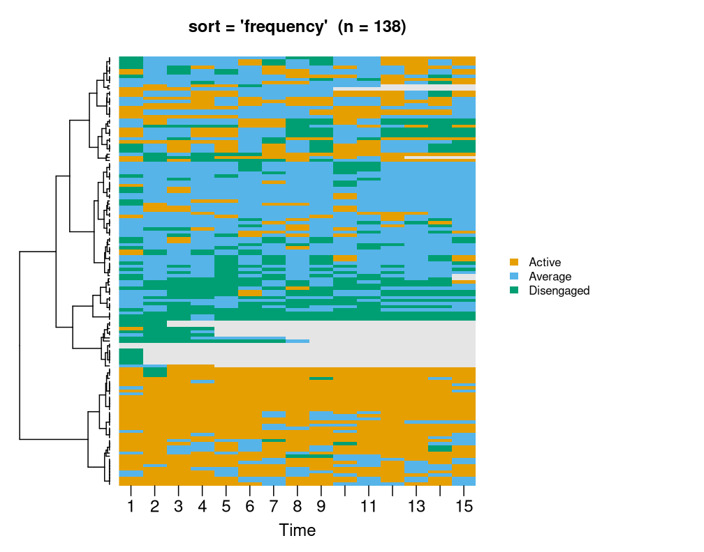
sequence_plot(trajectories, sort = "hamming",
main = "sort = 'hamming'")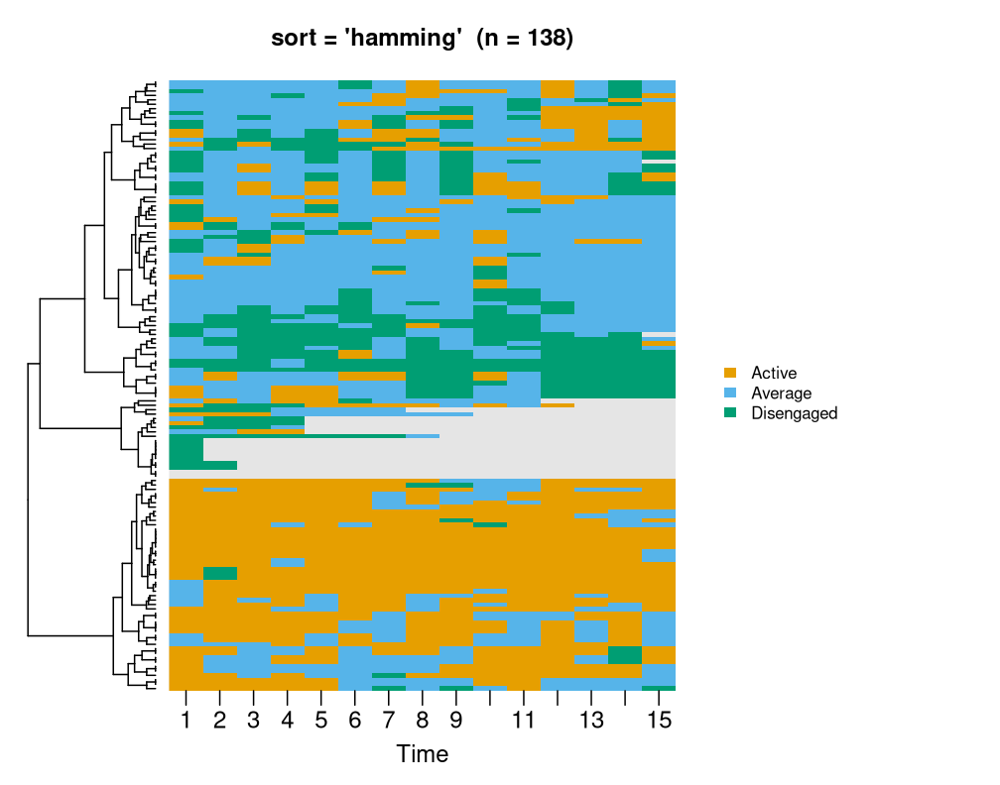
sequence_plot(trajectories, sort = "start",
main = "sort = 'start' (no dendrogram)")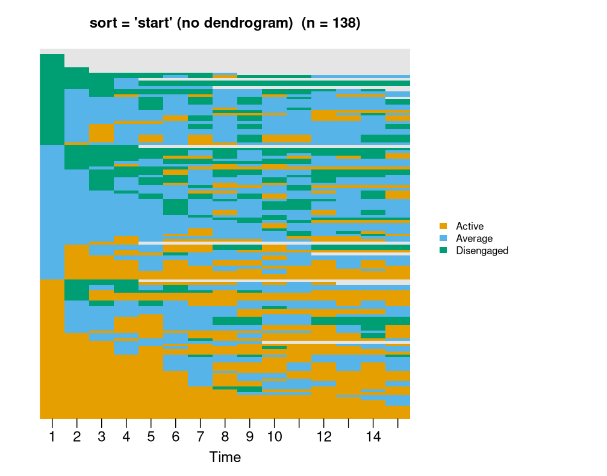
Available sorts: lcs (default), frequency,
start, end, plus any
build_clusters() distance — hamming,
osa, lv, dl, qgram,
cosine, jaccard, jw.
1.3 Cluster separators with k
Cut the dendrogram into k groups and overlay thin
horizontal lines at the cluster boundaries in the ordered rows. Tune
with k_color and k_line_width.
sequence_plot(trajectories, k = 3,
main = "k = 3 — white separators")
sequence_plot(trajectories, k = 5,
k_color = "black", k_line_width = 1.2,
main = "k = 5 — thin black")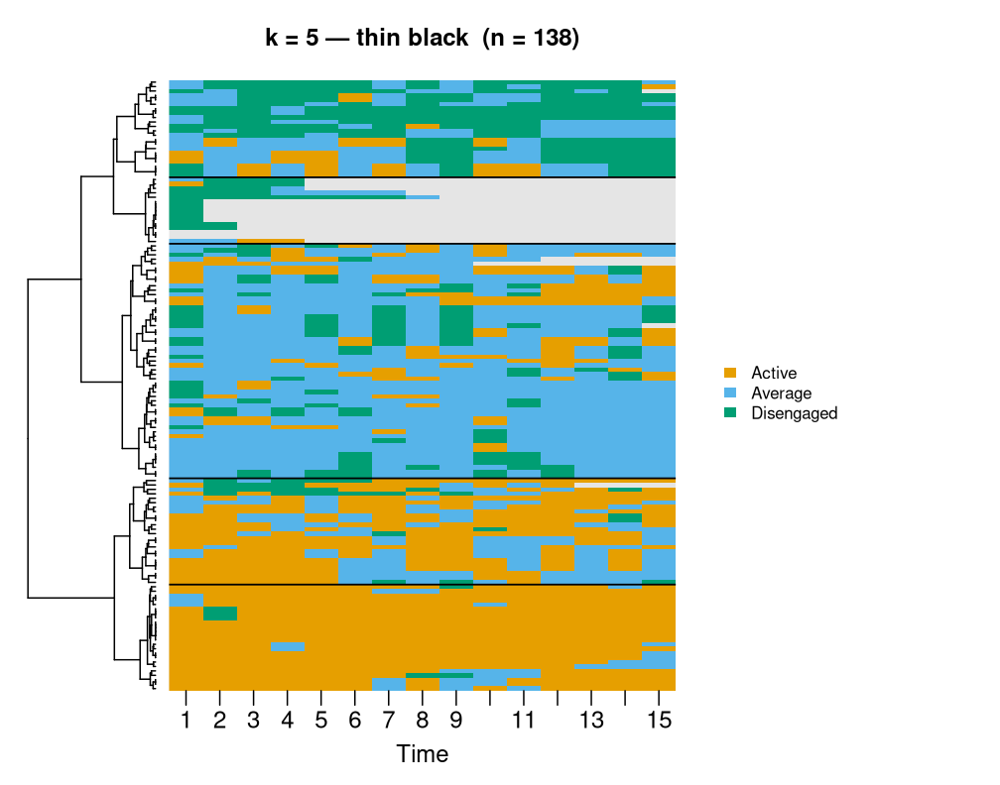
1.4 Legend position, custom palette, title
sequence_plot(trajectories,
legend = "bottom",
legend_title = "Engagement",
state_colors = c("#2a9d8f", "#e9c46a", "#e76f51"),
main = "Custom palette + bottom legend")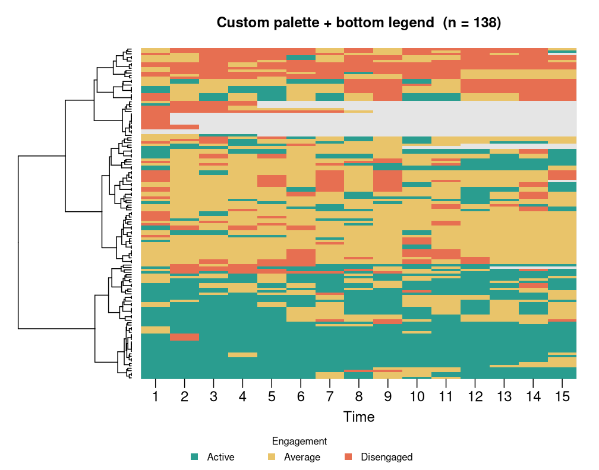
1.5 Cell borders + tick thinning
sequence_plot(trajectories,
cell_border = "grey60", tick = 3,
main = "Cell grid + every-3rd tick")1.6 frame = TRUE brings back the outer box
sequence_plot(trajectories, frame = TRUE,
main = "frame = TRUE")2. type = "index" — gap-ready carpet with facets
No dendrogram. Rows are sorted within each panel by
sort. Supports group (vector or auto from a
net_clustering) plus ncol / nrow
facet grids.
2.1 Single panel
sequence_plot(trajectories, type = "index",
main = "index — single panel")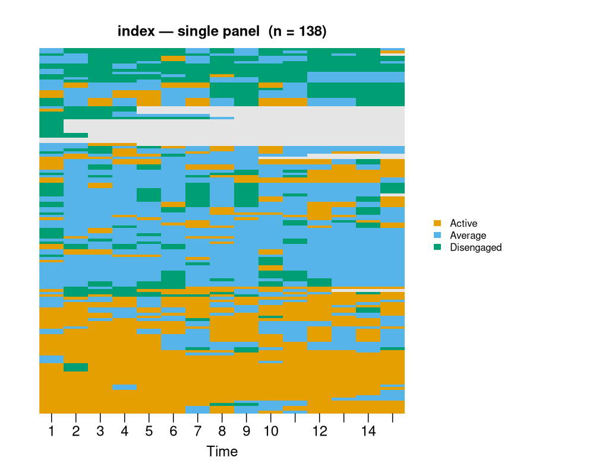
2.2 Visible row gaps
sequence_plot(trajectories, type = "index", row_gap = 0.25,
main = "index with row_gap = 0.25")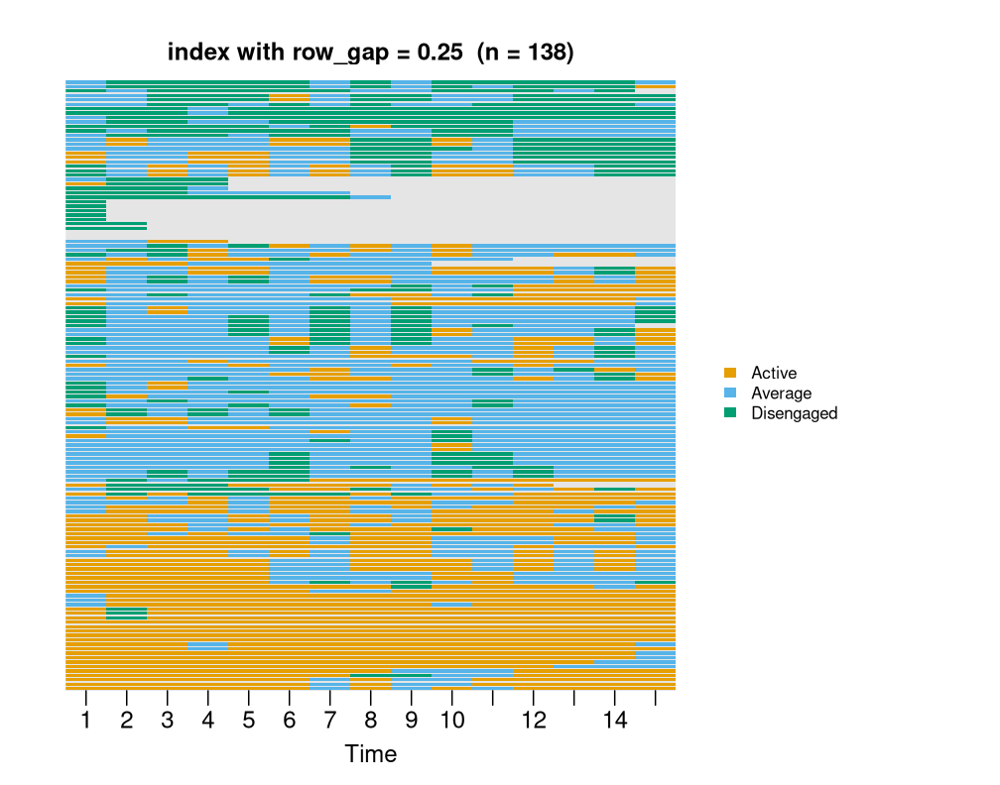
2.3 Faceted by net_clustering (auto 2×2 for k = 3)
cl <- build_clusters(as.data.frame(trajectories), k = 3L,
dissimilarity = "hamming", method = "ward.D2")
sequence_plot(cl, type = "index",
main = "index faceted by build_clusters(k = 3)")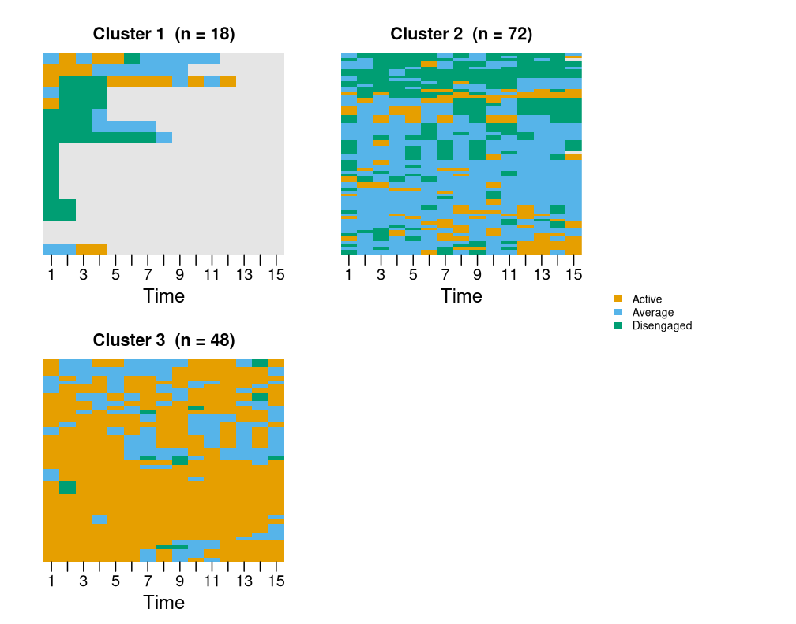
2.4 Force a 1×3 row
sequence_plot(cl, type = "index", ncol = 3, nrow = 1,
main = "index — ncol = 3, nrow = 1")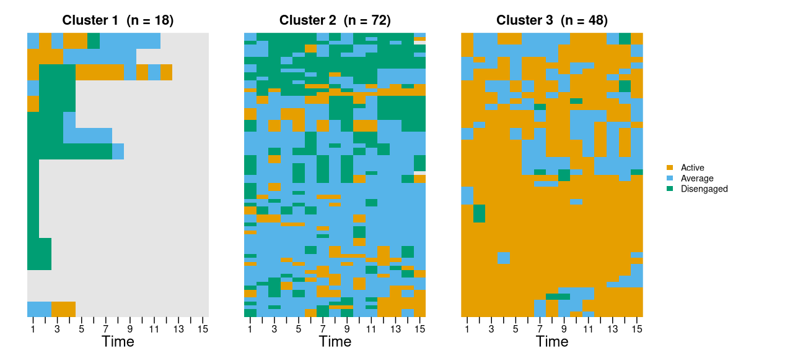
3. type = "distribution" — state proportions over
time
Stacked area or bar chart of state frequencies per time column.
3.1 Default stacked area
sequence_plot(trajectories, type = "distribution",
main = "distribution — stacked area")3.2 Stacked bars, count scale
sequence_plot(trajectories, type = "distribution",
geom = "bar", scale = "count",
main = "distribution — bars, count scale")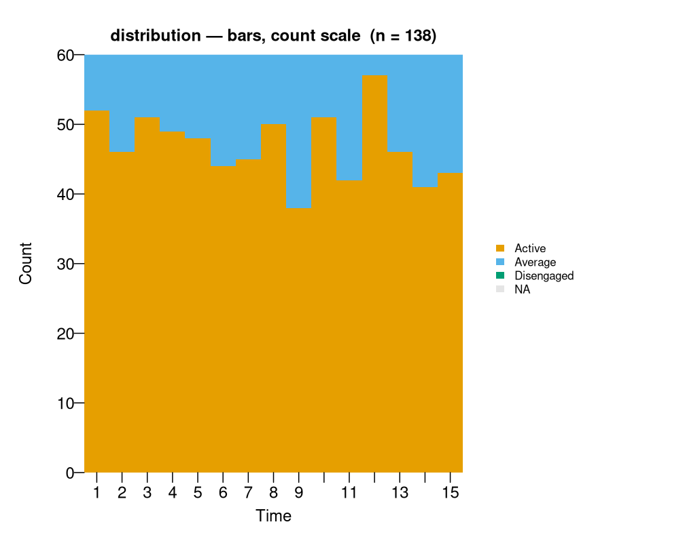
3.3 NA band on/off
sequence_plot(trajectories, type = "distribution", na = TRUE,
main = "na = TRUE")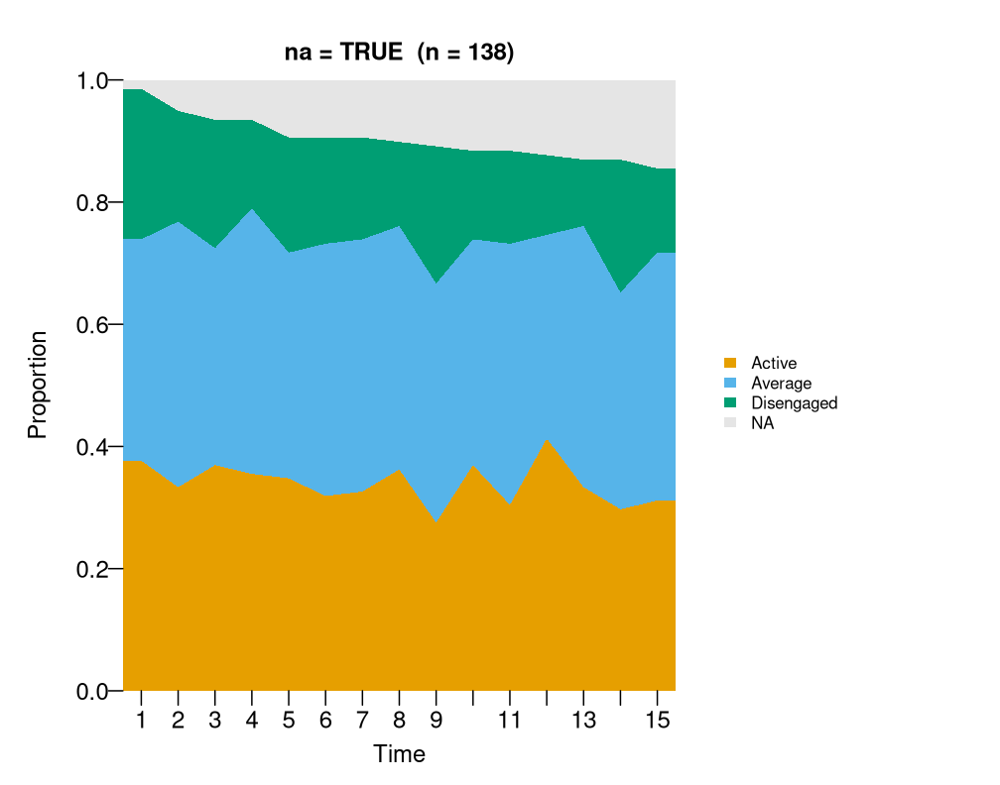
sequence_plot(trajectories, type = "distribution", na = FALSE,
main = "na = FALSE")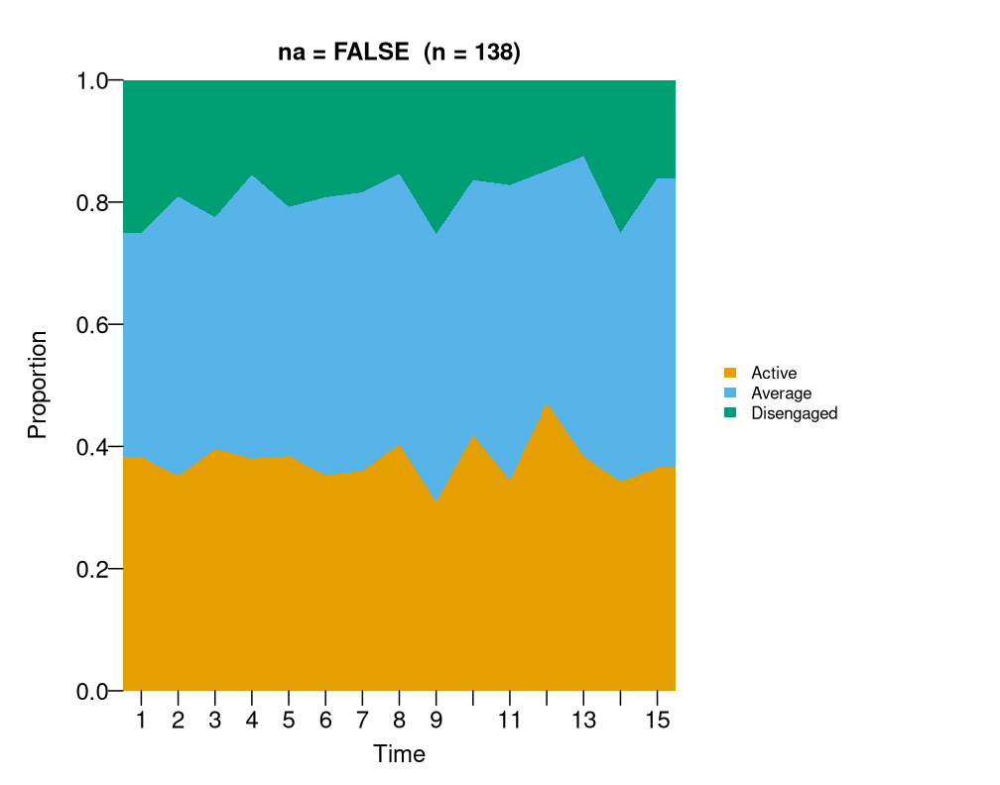
3.4 Faceted by cluster
sequence_plot(cl, type = "distribution",
main = "distribution by cluster (k = 3)")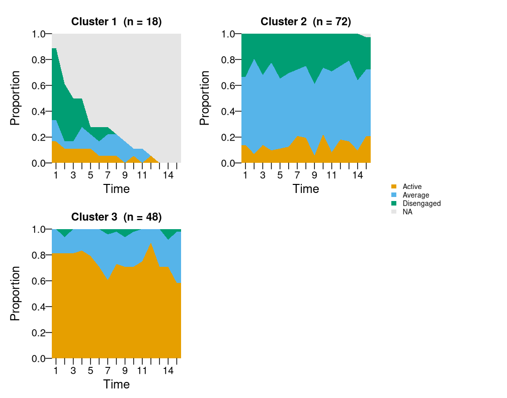
Cheat sheet
# Always explore first with the default:
sequence_plot(trajectories)
# Zoom in on cluster structure:
sequence_plot(trajectories, k = 3)
sequence_plot(trajectories, sort = "hamming", k = 4)
# Compare cluster compositions:
cl <- build_clusters(as.data.frame(trajectories), k = 3,
dissimilarity = "hamming", method = "ward.D2")
sequence_plot(cl, type = "index")
sequence_plot(cl, type = "distribution")
# Polish for a paper:
sequence_plot(trajectories, k = 3,
state_colors = c("#2a9d8f", "#e9c46a", "#e76f51"),
legend_title = "Engagement",
legend = "bottom",
cell_border = "grey70",
main = "Student engagement trajectories")